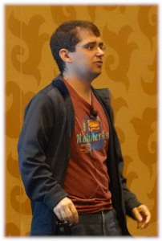

Making containers safer
On day one of the Linux Security Summit North America (LSS-NA), Stéphane Graber and Christian Brauner gave a presentation on the current state and the future of container security. They both work for Canonical on the LXD project; Graber is the project lead and Brauner is the maintainer. They looked at the different kernel mechanisms that can be used to make containers more secure and provided some recommendations based on what they have learned along the way.
Caring about container safety
Graber began by asking "why do we care about safe containers?" Not everyone does, he said, but the Linux containers project, which LXD and LXC are part of, has been working on containers for over ten years. LXC and LXD are used to create "system containers", which run unmodified Linux distributions, not "application containers" like those created using Docker. The idea is that LXD users will use the same primitives as they would if they were running the distribution in a virtual machine (VM); that they are actually running them on a container is not meant to be visible to them.
Administrators of these system containers will often give SSH access to the "host" to their users, who will run whatever they want on them. That is one of the reasons the project cares a lot about security. It uses every trick available, he said, to secure those containers: namespaces, control groups, seccomp filters, Linux security modules (LSMs), and more. The goal is to use these containers just like VMs.
Since the project targets system containers, it builds images for 18 distributions with 77 different versions every day, Graber said. That includes some less-popular distributions in addition to the bigger names; it also builds Android images. Beyond that, LXD is being used as part of the recent Linux desktop on Chromebooks feature of Chrome OS. There are per-user VMs in Chrome OS, but the Linux desktop distribution runs in a container with some persistent storage, he said. It has GPU passthrough and other features to make the desktop seamlessly integrate with Chrome OS.
All of the users of those distribution images built by the project can run any code they want inside those containers, which means that the Linux containers project needs to care a lot about security, Graber said.
Privileged versus unprivileged

There are two main types of containers, he said: privileged and unprivileged. But the Linux kernel has no notion of containers, they are purely a user-space construct built from the tools provided by the kernel. Privileged containers are those where root inside the container is the same user as root outside the container (i.e. UID 0). That is not true for unprivileged containers because UID 0 inside the container is mapped to some other, unprivileged user outside of the container via user namespaces.
Sadly, he said, the vast majority of containers that are run today are privileged containers. That includes most Docker containers and most of the containers that are run with Kubernetes. The main problem is that an attacker who can break out of the container now has root privileges on the host; the whole system is compromised. The security of those containers depends on LSMs, Linux capabilities, and seccomp filters; the container's privileges are not isolated enough and the policies for the various security mechanisms tend to "fail open".
The LXD project does not consider privileged containers to be safe to run; it is not a configuration that is supported. The project does what it can to close any of the holes it knows about, but strongly recommends against using privileged containers.
For unprivileged containers, since root in the container does not map to UID 0 in the host system, a container breakout is still serious, but not as damaging as it is for a privileged container. There is also a mode where each LXD container in a system will have its own non-overlapping UID and GID ranges in the host, which limits the damage even further. Any breakout will result in a process with a UID and GID that is not shared with any other process in any other container (or the host system itself).
User namespaces have been around since the 3.12 kernel, but few other container management systems use the feature to isolate their containers. Part of the reason for that is the difficulty in sharing files between containers because of the UID mapping. LXD is currently using shiftfs on Ubuntu systems to translate UIDs between containers and the parts of the host filesystem that are shared with it. Shiftfs is not upstream, however; there are hopes to add similar functionality to the new mount API before long.
The perils of privileges
After that, Graber turned the floor over to Brauner, who started by rhetorically asking "are privileged containers really that unsafe?" His answer was an unequivocal "yes"; he listed a half-dozen or so "pretty bad" CVEs that have affected privileged containers over the last few years. That list included CVE-2019-5736, which was the runc container-confinement breakout that was disclosed in February; it was a bad way to start the year in terms of container security. As far as he can tell, all of those CVEs would not affect unprivileged containers like those created by LXD.
It should be fairly trivial to use all of the available security mechanisms, but it turns out not to be. It is often the case that there is some way to block the problem behavior, but it is not used by the container managers for a variety of reasons. Some of those technologies may not be well documented, he said, which is a problem that the kernel developers should fix.
He began with namespaces, which are not used enough in his view. In the application container world, too few of the namespaces are used, typically just the mount namespace. All of them have some security benefit by isolating some resource from the rest of the system. The most obviously useful namespace is the user namespace, which isolates privileges between containers.
Namespaces have a "clunky API for sure", he said. Kernel developers should find a way to make it "nicer in some way". Properly ordering the creation of the namespaces at container startup time is important. In addition, there is no way to atomically setns() into all of the namespaces for a process. Brauner said he has some ideas on how to make that work better.
Next up was seccomp filters, which are "essential for privileged containers", Brauner said. Allowing privileged containers to call open_by_handle_at(), for example, will lead directly to a compromise. Seccomp filters provide a "useful safety net" for unprivileged containers, but are not truly required. Typically, unprivileged containers can maintain a blacklist of system calls that cannot be called, while privileged containers will need to create a whitelist of safe system calls.
LSM support is also essential for privileged containers, he said. Access to various files in procfs and sysfs must be blocked or the container can be compromised. The LSMs most frequently used by container managers are SELinux and AppArmor, but other "minor" LSMs (which can stack) are also added into the mix sometimes.
Recent and future features
Brauner then described some security features that had landed in the kernel recently as well as some upcoming features that may be coming or are wished for. The ability to defer seccomp filter decisions to user space was added for the 5.0 kernel. It allows user space to inspect the arguments to the system call in a race-free way, so things like path names can be inspected. LXD uses that new feature to allow the distributions in its containers to successfully call mknod() for certain devices (e.g. /dev/null) but not others that are dangerous to have in the container. The old way of handling that was to bind mount the safe devices from the host filesystem.
Deferring to user space is a "nifty feature", he said, but there are some problems with it. For example, it requires that user space handle the system call itself, which means there are some tricky privilege issues that need to be carefully considered. If the system call should be made, it needs to be done in the context of the container user, with its privileges, not those of the container manager.
All of that also makes the feature a bit annoying to use, he said. It would be better if there were a way to tell the kernel to simply resume the system call. There is also a problem with flags passed to some new system calls, such as clone3(), because they are not passed directly as a parameter but are instead inside a structure whose address is passed. But that means the in-kernel seccomp filtering cannot use the flag values as it is restricted to the parameters passed in registers and cannot chase pointers. He sent an email to the ksummit-discuss mailing list about seccomp and hopes to discuss some of those annoyances and possible solutions to them at the Kernel Summit in September.
Stacking major LSMs (SELinux, AppArmor, and Smack) is something the LXD project would like to see as well. Being able to run containers with their own LSM on a host with a different major LSM, such as an Android container that uses SELinux on a Ubuntu system (which uses AppArmor) or an Ubuntu container on Fedora (which also uses SELinux), would be useful.
The SafeSetID LSM has been merged for Linux 5.3. It restricts UID/GID transitions to only those allowed by a whitelist. It came from Chrome OS and will be quite useful for privileged containers.
The new mount API split the functionality of the mount() system call into a bunch of separate calls that will allow some nice features for container managers. For example, it will allow anonymous mounts, which are mounts that are not attached to any path in the filesystem but will still allow access to the files for the process holding the file descriptor for the mount. There may be a way to add the UID/GID shifting feature to the new API to eliminate the need for shiftfs.
Brauner also mentioned the new process ID (PID) file descriptor (pidfd) feature. Pidfds are file descriptors that refer to a process, so that signals can be sent to the right process without fear of hitting the wrong target if the PID gets reused. It also allows processes to get exit notifications for non-child processes. Pidfds are used by LXD; there may be more features coming for pidfds as well, he said.
In wrapping up, Graber said that other container managers can learn from what the LXD project has done. He thinks it is imperative that they stop using privileged containers and start using user namespaces, but they do not have to figure everything out on their own. He does not believe that containers can ever really contain unless they separate the privileges inside the container from those outside of it.
[I would like to thank LWN's travel sponsor, the Linux Foundation, for
funding to travel to San Diego for LSS-NA.]
| Index entries for this article | |
|---|---|
| Security | Containers |
| Conference | Linux Security Summit North America/2019 |
Posted Aug 21, 2019 15:34 UTC (Wed)
by stgraber (subscriber, #57367)
[Link] (6 responses)
This gives you 30min of root access to a LXD container that itself has LXD installed.
Posted Aug 21, 2019 15:45 UTC (Wed)
by epa (subscriber, #39769)
[Link] (5 responses)
Is it possible to use LXD as a non-privileged user, or do you need to be root to set it up?
Posted Aug 21, 2019 16:45 UTC (Wed)
by stgraber (subscriber, #57367)
[Link]
Now that being said, LXD can absolutely work nested inside an unprivileged container, which is the very setup we do on that demo server. In such an environment, LXD effectively runs as a root inside a user namespace, so as a globally unprivileged user which does have privileges against the namespaces tied to that user namespace.
It's worth pointing out that has a result of our daemon running as root, we do take any communication between the container and daemon very seriously as flaws there would be disastrous from a security standpoint (potentially allowing escape from an unprivileged container). The only such interface is a /dev/lxd REST API that we expose containers to fetch properties from the daemon. This interface can be disabled through a configuration key, at which point the container would no longer have any way to interact with the daemon that spawned it.
Posted Aug 22, 2019 4:49 UTC (Thu)
by skissane (subscriber, #38675)
[Link] (1 responses)
I tried starting a container inside a container using tryit. I couldn't get it to work, lots of permissions issues. (I don't really know what I am doing though, maybe I used the wrong steps or config options.)
Posted Aug 22, 2019 18:01 UTC (Thu)
by stgraber (subscriber, #57367)
[Link]
This should work fine. During "lxd init", the one thing that you'll need to pick which isn't already the default value is the IPv4 subnet. In my test, I used "192.168.0.1/24" which worked fine. The reason for this, is that the try-it environment has a subnet of 10.0.0.0/8 which prevents LXD from automatically picking an unused subnet in that range. Manually specifying one is therefore required. PS: Note that the try-it session is already itself a LXD container, so doing the above actually gets you a nested, nested container :)
Posted Aug 26, 2019 16:20 UTC (Mon)
by gradey (guest, #133690)
[Link] (1 responses)
Posted Aug 26, 2019 20:02 UTC (Mon)
by mathstuf (subscriber, #69389)
[Link]
> With nested containers would it make sense to have one "host" container that then creates nested containers for apps x and y?
It means that my application can work from within a container no differently than outside a container.
Posted Aug 21, 2019 17:40 UTC (Wed)
by brauner (subscriber, #109349)
[Link] (4 responses)
Posted Aug 21, 2019 22:09 UTC (Wed)
by rc (subscriber, #108304)
[Link] (3 responses)
Unless I'm missing something, that sounds ideal. (And yes, I agree with others who are concerned about the increased kernel attack surface of user namespaces)
Posted Aug 22, 2019 13:02 UTC (Thu)
by cyphar (subscriber, #110703)
[Link] (2 responses)
Not using security features is not a form of "principle of least privilege", it's an example of worrisome (if not outright bad) engineering.
> And yes, I agree with others who are concerned about the increased kernel attack surface of user namespaces.
The attack surface is increased by setting CONFIG_USER_NS=y in your kernel config. Using them to contain workloads on a machine that has CONFIG_USER_NS=y does not increase the attack surface, because even if you don't use them the container could call unshare(CLONE_NEWUSER) itself. In addition, most container runtimes block CLONE_NEWUSER with seccomp by default.
Posted Aug 22, 2019 17:54 UTC (Thu)
by rc (subscriber, #108304)
[Link] (1 responses)
Generally, in HPC the desire to use containers is not to run containers. The desire is to package up terrible software in such a way that it will work. That is all. Some code that users want to run was cobbled together by grad students who barely got the thing running so they could finish up their research and graduate. Then people all over the world want to take that (often) unmaintainable garbage and use it themselves. That's where containers come in. Most code tends to be of decent quality, but it's that garbage software that we want to put in a garbage bin (aka container).
In what way would using namespaces other than the mount or user namespace help? (or using seccomp, etc)? Users can already run arbitrary code so how is allowing arbitrary code *in a container* any worse if it is only using mount or user namespacing? Sure, using the pid or network namespaces could help isolate users from each other, but that's orthogonal since it should be done for *all* user processes and not just containers.
Long story short, I fail to see how this particular usage in HPC somehow makes "run arbitrary code x in a container with mount and user namespacing only, all launched in an unprivileged manner by a normal user" any worse than "run arbitrary program y launched in an unprivileged manner by a normal user not inside a container".
Our goal is to isolate users from each other, not isolate containers from each other or prevent code in containers from escaping into the environment of the user that launched the container.
Posted Aug 25, 2019 20:27 UTC (Sun)
by jgg (subscriber, #55211)
[Link]
Posted Aug 21, 2019 20:02 UTC (Wed)
by corsac (subscriber, #49696)
[Link] (4 responses)
Posted Aug 22, 2019 8:36 UTC (Thu)
by cyphar (subscriber, #110703)
[Link] (3 responses)
* You need to use seccomp (or drop CAP_DAC_READ_SEARCH) to stop the open_by_handle_at(2) attacks that allow a container to open the root filesystem of the host (don't forget that you're running code as kuid=0).
There are plenty of other examples, but those are the ones that immediately came to mind.
Posted Aug 22, 2019 8:41 UTC (Thu)
by corsac (subscriber, #49696)
[Link] (2 responses)
Posted Aug 22, 2019 12:55 UTC (Thu)
by cyphar (subscriber, #110703)
[Link] (1 responses)
As for uid=0, I would suggest that it's always a Very Bad Idea™ to run code as uid=0 unless it's absolutely necessary, even if you're doing it with user namespaces. But if you are going to do it, then using user namespaces is still much better than not using them (assuming the capability set is the same in both cases).
Posted Aug 30, 2019 10:26 UTC (Fri)
by Margaret48 (guest, #129042)
[Link]
It's also worth noting that granting user membership to lxd group = root[1], same as for docker. That means the "unprivileged" term is meaningless.
Systemd maintainers rejected userns support for systemd-nspawn saying thjat they always rely on some privileged process running behind the curtain.
[1] https://bugs.launchpad.net/ubuntu/+source/lxd/+bug/1829071
Posted Aug 21, 2019 21:09 UTC (Wed)
by walters (subscriber, #7396)
[Link] (5 responses)
Posted Aug 21, 2019 22:11 UTC (Wed)
by SEJeff (guest, #51588)
[Link] (4 responses)
See: newuidmap(1) and newgidmap(1) in a pretty recent version of shadow-utils.
Posted Aug 21, 2019 23:45 UTC (Wed)
by walters (subscriber, #7396)
[Link] (3 responses)
Posted Aug 22, 2019 8:41 UTC (Thu)
by cyphar (subscriber, #110703)
[Link] (2 responses)
Posted Aug 22, 2019 12:44 UTC (Thu)
by walters (subscriber, #7396)
[Link] (1 responses)
The LXD team's push for user namespaces is great, and worth a lot of credit. The article's authors (and you) are right to highlight the risks of running without user namespaces.
The way I think about security is: I often use the term "secure" when talking about code to mean "we believe we can ship fixes for the security issues that arise using this", and I think that's true of "uid 0 containers". You're right there have been numerous CVEs, and there are required band-aids like seccomp for open_by_handle_at() - but this all got fixed.
So again, I think calling them "privileged containers" is taking things a step too far.
Posted Aug 22, 2019 12:55 UTC (Thu)
by walters (subscriber, #7396)
[Link]
> Sadly, he said, the vast majority of containers that are run today are privileged containers. That includes most Docker containers and most of the containers that are run with Kubernetes.
I also think OpenShift deserves a lot of credit for coming out of the box from the very first 3.0 (Kubernetes-based) release in 2015 with the `MustRunAsRange` security policy - i.e. the pods aren't running as uid 0. This actually causes still to this day a lot of incompatibility with apps that run on "stock Kubernetes".
At the time, user namespaces were a lot more immature, so I think it was the right call.
(To be clear, I work on OpenShift now, but I didn't have anything to do with implementing that feature)
Posted Aug 22, 2019 4:40 UTC (Thu)
by jeffcook (subscriber, #119964)
[Link]
Note that I am using just plain LXC, *not* LXD, so maybe things are somewhat easier through LXD. But that brings me to the next point: it's disappointing that the LXC project is so laser-focused on intertwining LXD, which has a very Docker-ish feel to it; it requires a running daemon, config primarily via commands instead of files, etc. A little odd since if you're coming to LXC/LXD, you're probably looking specifically for something non-Dockery anyway.
All in all the Linux containers thing is just a total mess, sad as it is to say. cgroups, v1 and v2, are a mess. USER_NS, unprivileged containers, and root daemons to control everything is a mess. It's great that LXC is continuing in the tradition of things like OpenVZ and making an actually-usable containerized system that can at least run an init without some obtuse black magic and without fear of the whole thing getting vaporized if it's stopped the wrong way, but to be frank, Linux should deprecate all of that junk and just do as near as possible to a 1:1 copy of jails.
Posted Aug 23, 2019 7:54 UTC (Fri)
by Freeaqingme (guest, #103259)
[Link]
I'd like to counter this. Denying access to 'various files in procfs and sysfs' is too fragile. All it takes is a new file to be added in a new kernel release for this to cause a security issue. A container should be fully usable without having a procfs or sysfs mounted at all.
If that's not possible for some reason, access to various files in procfs/sysfs should be based on a whitelist, not a blacklist.
Posted Aug 23, 2019 10:36 UTC (Fri)
by dowdle (subscriber, #659)
[Link]
podman also is striving for making unprivledged containers the norm and has put a lot of work into that by utilizing user namespaces among other things. They also have the issue with filesystem ownership on the host vs in the container and trying to find the best way to solve it. I hadn't heard of shiftfs before but perhaps the two projects (LXD and podman) could work on this problem together?
Making containers safer
That way you can play with LXD, start containers and explore some of the basic features without ever installing anything locally.
There is a small tutorial that you can follow which will get you through some of the basics, or you can just play with it whichever way you want instead.
Making containers safer
Making containers safer
Some of those features involve network/storage management, system call interception in containers, checkpoint/restore, injection of uevents, mounts and devices inside containers, ...
Making containers safer
Making containers safer
lxc launch ubuntu:18.04 c1 -c security.nesting=true
lxc exec c1 bash
lxd init
lxc launch images:alpine/edge a1
lxc list
Making containers safer
Making containers safer
Making containers safer
Making containers safer
Making containers safer
Making containers safer
Making containers safer
Making containers safer
Making containers safer
* There are a bunch of attacks against attaching processes if you don't drop CAP_SYS_PTRACE (CVE-2016-9962 is a good example, but there are many more such as variations on CVE-2019-5736). Even after dropping CAP_SYS_PTRACE, there are userns-related security checks (in ptrace_may_access()) that completely eliminate a bunch of container-attach attacks -- protections you don't get without using user namespaces.
* If (for whatever reason) the container gets access to a file descriptor from the host's mount namespace, it's game over without user namespaces (SELinux can protect you here too, but given most people run on Ubuntu that doesn't help much).
Making containers safer
Making containers safer
Making containers safer
Making containers safer
Making containers safer
Making containers safer
Making containers safer
Making containers safer
Making containers safer
Making containers safer
Making containers safer
podman completely overlooked in the discussion